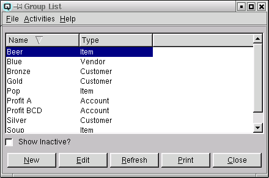

Group List

The group list displays a list of groups. Groups may be used to group
accounts, group customers, group vendors and group items for both
functional and reporting purposes.
List Table
-
- Name - The name of the group.
- Type - There are four group types.
-
- Account - Account groups link ledger accounts for the
purpose of reporting. For example, a profit and loss statement can be
printed for only those accounts included in a group.
- Customer - Customer groups link customers for the purpose
of special pricing and reporting. For example, you may sell an item to
only a specific group of customers at a special price.
- Vendor - Vendor groups link vendors for the purpose
of special costing and reporting.
- Items - Item groups link items for the purpose of pricing
and reporting. For example, you can link a price (regular or
promotional) to all items within a group.
- Inactive - The active state of the group.
Show Inactive
Toggle on or off. Toggle on to display both active and non-active
groups. Toggle off to display only active groups.
New
Select this function to create a group.
Edit
Select this function to edit the high-lighted group.
Refresh
Clicking on refresh will refresh the data on the screen.
Print
Select this function to print the contents of the list to the
printer.